指定自立支援医療機関（育成医療・更生医療） 顎口腔機能診断医療機関

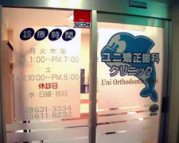三光カサノビルの2階にあります。外と内の階段からも、エレベーターからでもお越しになれます。
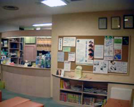掲示板には、当クリニックからのお知らせや、認定医などの証書が張ってあります。また、患者様に役立つ情報や、その下には雑誌や絵本などをご用意させていただいております。
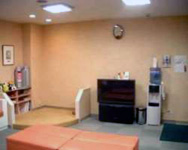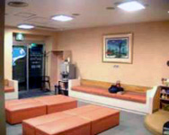
お子様のご家族もお待ちいただけるように約26人まで座れるソファをご用意しました。 小さいお子さんをお連れのご家族の為に、靴を脱いで遊べるスペースを設置しました。おもちゃも置いてあります。また、大型画面でビデオやDVDの番組などを見ることが出来ます。なお、ご自由にお飲みいただける冷水やお茶、コーヒーもご用意させていただいております。
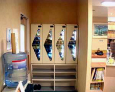診療室の床を清潔に保つために、ここで消毒済みのスリッパに履き替えてください。スリッパは紫外線殺菌装置により保管されています。
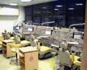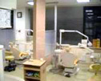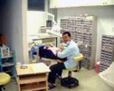
各ユニットに、X線を見るときに使用するランプ／ディスプレイが取り付けられています。壁際に見えているのは当病院に来院した人の歯型で必ず保管させていただいております。診療チェアは、子供用の開放タイプ４台（左の写真）および成人用のセパレートタイプ４台（右の写真）の合計８台が用意されております。
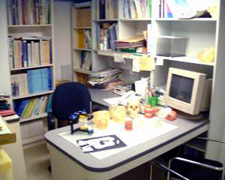この部屋で、テーブルの上の模型や噛み合せを再現する装置を利用して、治療についてのご説明やご相談をお受けいたします。
大人用
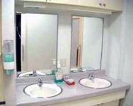
子供用
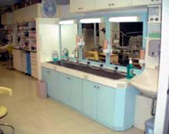
装置をはずしてから各患者さん専用の歯ブラシで歯磨きをしていただきます。染め出し錠剤やデンタルフロス、口の中の細菌を減らすための洗口剤が設置してあります。必要に応じて、歯の汚れを染め出してブラッシング指導が行われております。
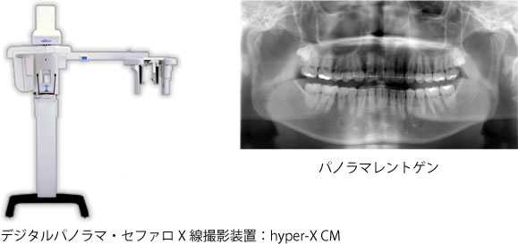
当院では、2003年からコーンビームCTと呼ばれる、X線の被爆量が少なく、高精度な歯科用CTを運用しています。主にあごの骨の三次元分析（外科的矯正治療）や、顎関節の分析、親しらずや埋伏歯（骨の中に歯が埋まって出てこない状態の歯）の位置確認、耳鼻疾患の確認などに利用しています。また、一般の歯科クリニックからの依頼として、近年普及してきている歯科用インプラント（人工歯根）の骨検査なども行っています。
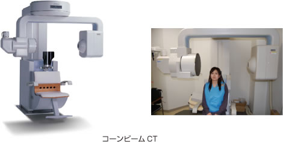
当院では、Ｘ線写真のデジタル化を達成しました。これにより、患者様のＸ線被爆量を最小限に抑え、より安全な治療を目指しています。また、フィルムレス（従来のフィルムの現像処理がないため排液が出ない）により、環境に配慮しています。撮影したレントゲンのデジタルデータは、院内LANのモニター上で画像解析を行い、ペーパーレス環境を整え、これも同じく環境に配慮しています。
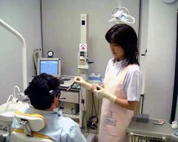顎の動きと筋肉の状態を同時に検査する機械があり、顎の動きの異常を捉えることができます。
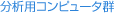
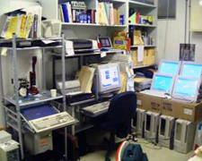
骨の形の分析や、外科的矯正治療の手術のシミュレーション、どのように骨を動かすかを計測するシステムなどがあります。
当院では特に外科矯正治療にともなう顔貌の変化をよりバランスの取れた結果を得られるように、治療計画にたてています。
治療後にどのようなお顔になるかをお気軽にご相談ください。
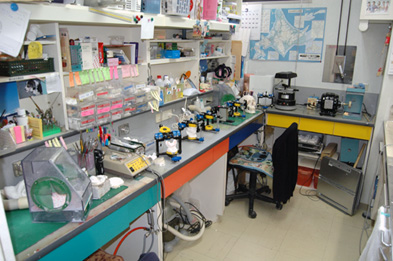
ここで、当クリニックや他の診療所のお口の中に入れる装置や模型などを作成しています。
また、顎の運動を再現する機械である咬合器を積極的に利用して、高度な治療を目指しております。